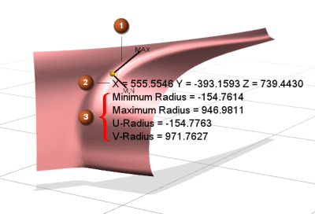

Local Radius Analysis
What is it?
Use the Local Radius Analysis command to select points on curves, edges, or faces and retrieve information about location, U/V parameters, and radius of curvature.
-
The new Local Radius Analysis command replaces the Geometric Properties command.
-
Local Radius Analysis creates an analysis object that is associative with its parents so that as the parent is modified, the radius analysis information updates accordingly. The Local Radius analysis object is listed in the Analysis section of the Part Navigator.
-
Radius analysis information is displayed on-screen and can also be displayed in an Information window.
-
You can control what analysis information is displayed by selecting specific location, orientation, and radius of curvature check boxes in the Local Radius Analysis dialog box.

-
Orientation Display =
 Minimum/Maximum Radius Tangent
Minimum/Maximum Radius Tangent -
Location Display =
Coordinates -
Radius of Curvature Display =
Radius, Minimum/Maximum Radius, U/V Radius
-
Where do I find it?
|
Application |
Gateway, Modeling, Shape Studio |
|
Menu |
Analysis→Local Radius Analysis |